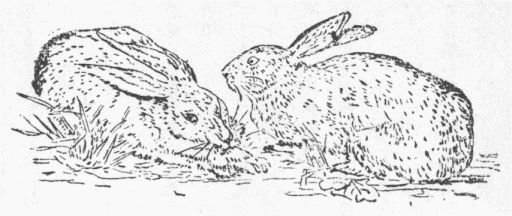
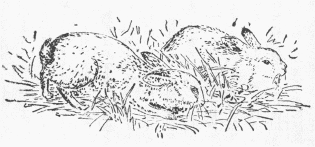
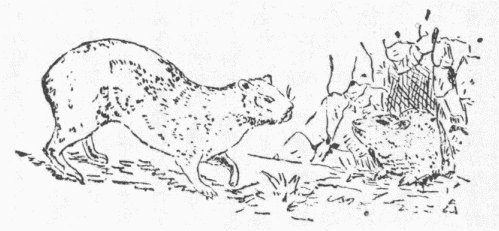

第１図 野兎

第２図 熟兎

第３図 岩兎
この一篇を
綴るに先だち断わり置くは単に兎と書いたのと
熟兎と書いた物との区別である。すなわちここに兎と書くのは英語でヘヤー、独名ハーセ、ラテン名レプス、スペイン名リエプレ、仏名リエヴル等が出た、アラブ名アルネプ、トルコ名タウシャン、梵名
舎々迦、独人モレンドルフ説に
北京辺で山兎、野兎また野猫児と呼ぶとあった。吾輩幼時和歌山で小児を
睡らせる
唄にかちかち山の兎は
笹の葉を食う故耳が長いというたが、まんざら
舎々迦てふ梵語に
拠って作ったのであるまい。兎を野猫児とはこれを啖肉獣たる野猫の
児分と見立てたのか。ただしノルウェーの兎は雪を
潜って
 鼠
鼠を追い食う（一八七六年版サウシ『
随得手録』三）と同例で北京辺の兎も鼠を捉るのか知れぬ。日本では専ら「うさぎ」また「のうさぎ」で通るが、古歌には
露窃てふ名で
詠んだのもある由（『本草啓蒙』四七）。また本篇に熟兎と書くのは英語でラビット、仏語でラピン、独名カニンヘン、伊名コニグリオ、西名コネホ、これらはラテン語のクニクルスから出たので英国でも以前はコニーと呼んだ。日本では「かいうさぎ」、また外国から来た故
南瓜を
南京というごとく南京兎と称う。兎の一類はすこぶる多種でオーストラリアとマダガスカルを除き到る処産するが南米には少ない。日本普通の兎は学名レプス・ブラキウルス、北国高山に
棲んで冬白く化けるやつがレプス・ヴァリアビリス、支那北京辺の兎はレプス・トライ、それから琉球特産のペンタラグス・フルネッシは耳と後脚がレプス属の兎より短くて熟兎に近い。一八五三年版パーキンスの『
亜比西尼住記』にもかの地に兎とも熟兎とも判然せぬ種類が多いと筆し居る。熟兎はレプス等の諸兎と別に一属を立てすなわちその学名をオリクトラグス・クニクルスという。野生の熟兎は兎より小さく耳と後脚短く頭骨小さくて軽い。しかのみならず兎児は毛生え眼開いて生まれ、生まるると直ぐに自ら食を求めて親を煩わさず自活し土を浅く
窪めてその中に居るに、熟兎児は裸で盲で生まれ当分親懸り、因って親が地下に深く
孔を掘り通してその
裏で産育する、一八九八年版ハーチングの『
熟兎篇』に拠ると
原と熟兎はスペイン辺に産しギリシアやイタリアやその東方になかった。古ユダヤ人もこれを知らずしたがって『聖書』に見えず、英訳『聖書』に
熟兎とあるはヘブリウ語シャプハンを誤訳したのでシャプハン実は
岩兎を指すとある。岩兎は外貌が熟兎に似て物の
骨骼その他の構造全く兎類と別で象や
河馬等の有蹄獣の一属だ。この物にも数種あってアフリカとシリアに産す（第三図は南アフリカ産ヒラクス・カベンシス）。巌の
隙間に棲み番兵を置いて遊び歩き岩面を走り樹に上るは妙なり、その爪と見ゆるは実は
蹄で甚だ
犀の蹄に近い（ウッド『
博物画譜』巻一）。
却説兎と熟兎は物の食べようを異にす、たとえば
蕪菁を
喫うるに兎や鼠は皮を
剥いで地に残し身のみ食うる、熟兎は皮も身も食べて
畢う。また地に生えた蕪菁を食うに鼠は根を食い廻りて中心を最後に食うに熟兎は根の一側から食い始めて他側に徹す（ハーチング、六頁）。ストラボンの説に昔マヨルカとミノルカ諸島の民熟兎
過殖て食物を
喫い尽くされローマに使を
遣わし新地を給い移住せんと請うた事あり、その後熟兎を
猟殲さんとてアフリカよりフェレット（
鼬の一種）を輸入すと、プリニウスはいわくバレアリク諸島に熟兎
夥くなって農穫全滅に瀕しその住民アウグスッス帝に兵隊を派してこれを
禦がんと乞えりと、わが邦にも狐狸を取り尽くして兎
跋扈を極め農民
困しむ事しばしばあるが熟兎の蕃殖はまた格別なもので、古く地中海に瀕せる諸国に
播がり十九世紀の始めスコットランドに甚だ
稀だったが今は夥しく殖えイングランド、アイルランドまたしかり、オーストラリアとニュージーランドへは最初遊猟か利得のため熟兎を移すとたちまち殖えて他の諸獣を圧し農作を荒らす事言語に絶し種々根絶の方法を講じ居るが今に目的を達せぬらしい。しかしおかげで予ごとき貧生は在英九年の間、かの地方から輸入の熟兎の缶詰を常食して極めて安値に生活したがその仇をビールで取られたから何にも残らなんだワハハハ。日本に熟兎を養う事数百年なるもかかる
患害を生ぜぬは土地気候等が不適なはもちろん、生存競争上その蕃殖を妨ぐるに力ある動物が多い故と
惟う。しかし熟兎はなくとも兎ばかりでも弱る地方多きは昔よりの事でその害を防ぐ妙案が大分書物に見える。例せば『中陵漫録』五にいわく「兎
蕎麦の苗を好んで根本より鎌で刈ったごとく一
畦ずつ食い尽くす、その他草木の苗も同じく食い尽くす事あり、いかようにしても防ぎがたし、これを防ぐには山下の粘土を取り水にてよく泥に掻き立てその苗の上より水を
灌ぐがごとく
漑ぎ掛くれば泥ことごとく茎葉の上に乾き附いてあえて食う事なし、苗の生長には
障らず、およそ
圃の周り二畦三畦通りもかくのごとくすれば来る事なし、圃の中まで入りて食う事を知らず、米沢の深山中で山農の行うところなり」と、これより
振った珍法は『甲子夜話』十一に出で
平戸で兎が麦畑を害するを避けんとて小さき札に狐の
業と兎が申すと書く、狐これを見て怒りて兎を責むるを恐れ兎害を止めると農夫伝え行う、この札立つれば兎難必ずやむは不思議だとある。英国にも
兎径という村や野が数あり兎が群れてその辺を通ったからこの名を生じた。兎の通路は熟兎のよりも一層
判然するという事だが、わが邦の
兎道などいう地名もこのような起因かも知れぬ。それから支那で跳兎、一名
蹶鼠というはモレンドルフ説にジプス・アンタラツスでこれは兎と同じ齧歯獣だが縁辺やや遠く、『本草綱目』に〈蹶は頭目毛色皆兎に似て爪足鼠に似る、前足わずか寸ばかり、後足尺に近し、尾また長くその端毛あり、一
跳数足、止まるとすなわち
蹶き
仆る〉と
出づ、英語でジャーボアといいて後脚至って長く外貌習慣共にオーストラリアのカンガルーに似た物だ（第四図）。『
孔叢子』にこの獣
甘草を食えば必ず
蛩々とて
青色馬に似た獣と
※※［＃「馬＋巨」、U+99CF、97-3］［＃「馬＋墟のつくり」、U+9A49、97-3］とて
騾のごとき獣とに
遺す、二獣、人来るを見れば必ず蹶を負うて走る、これは蹶を愛するでなくて甘草欲しさだ、蹶も二獣の可愛さに甘草を残すでなく足を仮るためじゃとある、まずは日英同盟のような利害一遍の親切だ、『
山海経』に〈飛兎背上毛を以て飛び去る〉とあるも跳兎らしい。
 第４図 跳兎
第４図 跳兎
東洋でも西洋でも古来兎に関し随分間違った事を信じた。まず『本草綱目』に『礼記』に兎を
明※［＃「目＋示」、U+770E、97-8］といったはその目
瞬かずに瞭然たればなりとあるは事実だが兎に脾臓なしとあるは実際どうだか。また尻に九孔ありと珍しそうに書きあるが他の物の尻には
何つ孔あるのか、随分
種々と物を調べた予も尻の孔の数まで行き届かなんだ。ただし
陳蔵器の説に〈兎の尻に孔あり、子口より出づ、故に妊婦これを忌む、独り唇欠くためにあらざるなり〉、ただ尻に孔あるばかりでは珍しゅうないがこれは兎の肛門の
辺に数穴あるを
指したので予の近処の兎狩専門の人に聞くと兎は子を生むとたちまち自分の腹の毛を掻きむしりそれで子を被うと言った。牛が毛玉を吐く例などを比較してこの一事から子を吐くと言い出たのだろ。しかして支那の妊婦は兎を食うて産む子は痔持ちになったり毎度
嘔吐いたりまた
欠唇に生まれ付くと信じたのだろう。『

雅』に咀嚼するものは九
竅にして胎生するに独り兎は雌雄とも八竅にして吐生すと見え、『博物志』には〈兎月を望んで孕み、口中より子を吐く、故にこれを
兎という、兎は吐なり〉と出づ。雌雄ともに八竅とは鳥類同様生殖と排穢の両機が一穴に兼備され居るちゅう事で兎の陰具は平生ちょっと外へ見えぬからいい出したらしい、
王充の『
論衡』に兎の雌は雄の
毫を
舐めて孕むとある、『楚辞』に顧兎とあるは注に顧兎月の腹にあるを天下の兎が望み見て気を感じて孕むと見ゆ、従って仲秋月の明暗を見て兎生まるる多少を知るなど説き出した。わが邦でも昔は兎を八
竅と見た物か、従来兎を鳥類と
見做し、獣肉を忌む神にも供えまた家内で食うも忌まず、一疋二疋と数えず一羽二羽と呼んだ由、古ギリシアローマの学者またユダヤの学僧いずれも兎を両性を兼ねたものとしてしばしばこれを
淫穢不浄の標識とした（ブラウン『
俗説弁惑』三巻十七章）。ブラウンいわくこれは兎の雌雄ともに陰具の
傍に排泄物を出す特別の
腺その状
睾丸ごときあり、また肛門の辺に前に述べた数孔あり、何がな珍説を出さんとする輩これを見て兎の雌に睾丸あり雄に牝戸ありとしたらしい。しかのみならず、兎の陰部
後に向い小便を後へ放つもこの誤説の
原だったろうと。一七七二年版コルネリウス・ド・バウの『
亜米利加土人の研究』巻二、頁九七には兎にも熟兎にも雌の
吉舌非常に長く陽物に酷似せるもの少なからず、これより兎は
半男女といい出したと出づ。支那にも似た事ありて『南山経』や『列子』に〈類自ら牝牡を
為す、食う者妬まず〉、類は『本草綱目』に
霊狸の事とす。『嬉遊笑覧』九にいわく「『談往』に馮相詮という少年の事をいって『異物志』にいわく霊狸一体自ら陰陽を為す、故に能く人に媚ぶ皆天地不正の気云々」。これは霊狸の陰辺に
霊狸香を排泄する腺孔あるを見て牡の体に牝を兼ぬると
謬ったので古来
斑狼が半男女だという説盛んに欧州やアフリカに行われたのも同じ事由と知らる。またブラウンは兎が既に孕んだ上へまた交会して孕み得る特質あるをその婬獣の名を博した一理由と説いたが、この事は兎が
殖えやすい訳としてアリストテレスやヘロドツスやプリニウスが
夙く述べた。それから『綱目』に〈『主物簿』いう
孕環の兎は左腋に
懐く毛に文采あり、百五十年に至りて、環脳に転ず、能く形を隠すなり、王相の『雅述』にいわく兎は潦を以て鼈と
為り鼈は旱を以て兎と為る、
 惑
惑明らかならざればすなわち
雉兎を生む〉と
奇い説を引き居る。『
竹生島』の謡曲に
緑樹影沈んで魚樹に登る景色あり月海上に浮かんでは兎も波を走るか面白の島の景色やとあるは『
南畝莠言』上に拠ると建長寺僧自休が竹生島に題せる詩の五、六の句〈樹影沈んで魚樹に上り、清波月落ちて兎流れに
奔る〉とあるを作り替えたのだ。予が見たところ兎を海へ追い込んだり急流に投げ込んだりすると直ぐに死んだので右の句はただ文飾語勢を主とした虚構と思っていたが、仏経に
声聞を兎川を渡る時身全く水に
泛ぶに比し、ウッドの『
博物画譜』巻一に兎敵を避くるに智巧を極め、犬に嗅ぎ付けらるるを避けんとて流水や大湖に躍り入り長距離を泳いで遠方へ上陸し、また時として犬に追究されて海に入り奔波を避けずして妙に難を免るるある由記せるを見て、
件の謡や詩の句はまるで無根でないと知った。
上述のごとく兎は随分農作を荒らしその肉が食えるから、兎猟古くより諸国に行われた。『淵鑑類函』四三一に
后
巴山に猟し大きさ
驢ほどなる兎を獲た、その夜夢に冠服王者のごとき人が、
にいうたは我は
扶君としてこの地の神じゃ、汝我を辱めた罰としてまさに手を逢蒙に仮らんとすと、翌日逢蒙
を
弑して位を奪うた。今に至ってもその辺の土人は兎を
猟らぬと見え、また後漢の劉昆弟子常に五百余人あり、春秋の饗射ごとに
桑弧蒿矢もて兎の首を射、県宰すなわち吏属を率いてこれを
観たとあり、遼の国俗三月三日木を刻んで兎とし
朋を分けて射た、因ってこの日を
陶里樺（兎射）と称えたと
出づ。これは兎害を
厭勝のため兎を射る真似をしたのだろ。天主僧ガーピョンの一六八八
至一六九八年間康煕帝の勅を奉じ西
韃靼を巡回した紀行（アストレイ『
新編紀行航記全集』巻四、頁六七六）に帝が露人と講和のため遣わした一行がカルカ辺で兎狩した事を記して歩卒三、四百人弓矢を帯びて三重に兎どもを取り巻き正使副使と若干の大官のみ囲中に馬を
馳せて兎を射、三時間足らずに百五十七疋取った。兎雨と降る矢の下に逃げ道を
覓め歩卒の足下を
潜り出んとすれば歩卒これを踏み殺しまた蹴り戻す、あるいは矢を受けながら走りあるいは一足折られ三足で
逃れ廻る、囲中また徒士立ちて大なる棒また犬また銃を用いて兎の逃げ出るを防いだとあって、兎狩も大分面白い物らしいが、熊楠はこんな人騒がせな殺生よりはやはり
些少ながら四、五升飲む方がずっと安楽だ。文政元年より毎年二月と九月に長崎奉行兎狩に託して
人数押えを行うた由（『甲子夜話』六四）、いずれそれが済んだ後で一盃飲んだのでしょう。『類函』四三一に〈『張潘漢記』曰く
梁冀兎苑を河南に起す、檄を移し在所に生兎を調発す、その毛を刻んで以て
識と為す、人犯す者あれば罪死に至る〉、何のためにかくまで兎を愛養したのか判らぬ。英国でもゼームス二世の時諸獣の毛皮を着る事大流行じゃったが、下等民も御多聞に
洩れずといって
銭はなし兎の皮を用いたので、ロンドン
界隈は夥しく兎畜養場が立ったという（サウシ『
随得手録』一および二）。
『礼記』に兎を食うに尻を去ると見ゆるは前述異様の排泄孔などありて不潔甚だしいかららしい。兎肉の能毒について『本草綱目』に種々述べある。陶弘景は兎肉を羹とせば人を益す、しかし妊婦食えば子を欠唇ならしむと言うた。わが邦でも『調味
故実』に兎は婦人懐妊ありてより誕生の百二十日の御祝い過ぐるまで忌むべしと見ゆ。スウェーデンの俗信ずらく、木に
楔を打ち込んで半ば裂けた中に楔を留めた処や兎の頭を見た妊婦は必ず欠唇の子を生むと、一体スウェーデン人はよほど妊婦の心得に注意したと見えて妊婦が鋸台の下を歩けば生まるる子の喉が鋸を挽くように鳴り続け、斑紋ある鳥卵を食えば子の膚

くて羽を抜き去った鶏の膚のごとし、豚を
触れば子が豚様に
呻き火事や
創ある馬を見れば子に
痣あり、人屍の臭いを嗅げば子の息臭く墓場を行くうち棺腐れ壊れて足を土に踏み入るれば生まるる子
癲癇持となるなど雑多の先兆を
列ねある（一八七〇年版ロイド『
瑞典小農生活』九〇頁）。しかし母が妊娠中どうしたら南方先生ほどの大酒家を生むかは分らぬと見えて書いていない。一六七六年版タヴェルニエーの『
波斯紀行』には
拝火教徒兎と
栗鼠は人同様その雌が毎月経水を生ずとて忌んで食わぬとある。果して事実なりや。『抱朴子』に兎血を丹と蜜に和し百日蒸して服するに
梧子の大きさのもの二丸ずつ百日続け用ゆれば神女二人ありて来り侍し役使すべしとある、いかにも眉唾な話だが下女払底の折から殊に人間に見られぬ神女が桂庵なしに奉公に押し掛け来るとはありがたいから一つ
試して見な。欧州にもこれに劣らぬ
豪い話があってアルペルッス・マグヌスの秘訣に人もし兎の四足と
黒鳥の首を
併せ
佩ぶればたちまち向う見ず無双となって死をだも
懼れず、これを腕に付くれば思い次第の所へ往きて無難に還るを得、これに
鼬の心臓を合せて犬に餌えばその犬すなわち極めて猛勢となって殺されても人に
順わずと見ゆるがそんなものを
拵えて何の役に立つのかしら（コラン・ドー・ブランチー『
妖怪事彙』第四版二八三頁）。米国の黒人は兎脳を生で食えば脳力を強くしまたそれを
乾して
摩れば歯痛まずに生えると信ず（一八九三年版『
老兎巫蠱篇』二〇七頁）。陳蔵器曰く兎の肉を久しく食えば人の血脈を絶ち元気陽事を損じ人をして
痿黄せしむと、果してしからば好色家は避くべき物だ。また痘瘡に可否の論が支那にある（『本草綱目』五一）。予の幼時和歌山で兎の足を貯え置き痘瘡を
爬くに用いた。これその底に毛布を着たように密毛
叢生せる故で予の姉などは
白粉を塗るに用いた。ペピイスの『
日記』一六六四年正月の条に兎の足を膝関節込みに切り取って佩ぶれば
疝痛起らずと聞き、笑い半分試して見ると果して効いたとある。鰯の頭も信心と言うが護符や
呪術は随分信ぜぬ人にも効く、これは人々の
不自覚識に自然感受してから身体の患部に応通するのだとマヤースの『ヒューマン・パーソナリチー篇』に詳論がある、私なんかも生来の大酒だったが近年ある人から妻が
諫めて泣く時その涙を三滴布片に落しもらいそれを
袂に入れ置くと必ずどんな酒呑みもやまる物と承りましてその通り致し当分めっきりやみました。プリニウスの『
博物志』八巻八一章に兎の毛で布を織り成さんと試みる者あったが皮に生えた時ほど柔らかならずかつ毛が短いので織ると直ぐ切れてしもうたと見ゆ、むやみに国産奨励など唱うる御役人は心得て置きなはれ。『
塩尻』巻三十に「或る記に曰く永享七年十二月
天野民部少輔遠幹その領内秋葉山で兎を狩獲信州の林某に依りて徳川殿に献ず、同八年正月三日徳川殿
謡初にかの兎を羹としたまえり松平家
歳首兎の御羹これより起る、林氏この時
蕗の
薹を献ぜしこれ蕗の薹の
権輿と云々」とあるは
可い思い付きだ、時節がら新年を初め官吏どもの遊宴には兎と蕗の薹ばかり用いさせたら大分の物入りが違うだろ。本邦では兎に
因んだ遊戯はないようだが英国には
兎および猟犬ちゅうのがあって、若者一人兎となってまず出立し道中諸処に何か落し置くを跡の数人猟犬となってこれを
追踪捕獲するので一同
短毛褐を着
迅く走るに便にす、年中季節を問わず土曜の午後活溌な運動を好む輩の
所為だが余り動きが
酷くてこれに堪えぬ者が多いという（ハツリット『
信念および民俗』一九〇五年版巻一、頁三〇五）。予はそんな事よりやはり寝転んで
盃一がいいというと読者は今のさき妻の涙で全然酒がやんだといったじゃないかと叱るだろ。それから『今昔物語』に
大和国に殺生を楽しんだ者ありて生きながら兎の皮を
剥いで野に放つとほどなく毒瘡その身を腐爛して死んだと載せて居る。故ロメーンスは人間殊に小児や未開人また
猴や猫に残忍な事をして悦楽する性ある由述べた。すなわち猫が鼠を捉えて直ちに
啖わず、
手鞠にして抛げたりまた虚眠して鼠その暇を伺い逃げ出すを片手で面白そうに掴んだりするがごとし。わが邦の今も小児のみか大人まで蟹の両眼八足を抜いて
二※［＃「契」の「大」に代えて「虫」、U+86EA、104-6］のみで
行かせたり蠅の背中に
仙人掌の
刺を突っ込み
幟として競争させたり、警察官が婦女を拘留して入りもせぬ事を
根問いしたり、前和歌山県知事川村竹治が何の理由なく国会や県会議員に誓うた約束をたちまち
渝して予の祖先来数百年奉祀し来った官知社を潰しひとえに熊楠を
憤らせて
怡ぶなどこの類で、いずれも仏眼もて
観れば仏国のジル・ド・レッツが多数の小児を犯姦致死して他の至苦を以て自分の最楽と
做したに異ならぬ。川村の事は
只今グラスゴウ市の版元から頼まれて編み居るロンドン大学前総長フレデリク・ヴィクトル・ジキンス推奨の『南方熊楠自伝』にも書き入れ居るから外国までの恥
曝しじゃ。とにかくかかる残忍性多き者が平気でおらるるこの世界はまだまだ開明などとは決して呼ばれぬべきはずだ。さて一寸の虫にも五分の魂でマヤースの『ヒューマン・パーソナリチー』に犬にも幽霊ある事は予も十数年研究していささか得たところあるが不幸にも観る人の心を離れて幽霊という物ある証拠を一も得ない。しかしもし人に幽霊あらば畜生にも幽霊あるべしで、『淵鑑類函』四三一に司農卿
揚邁が兎の幽霊に遇った話を載せ、『法苑珠林』六九に王将軍殺生を好んでその女兎鳴の音のみ出して死んだとある。
『
治部式』に支那の古書から採って諸多の祥瑞を挙げた中に赤兎上瑞、白兎中瑞とある、赤兎はどんな物か知らぬが、漢末に〈人中に呂布あり馬中に赤兎あり〉と伝唱された名馬の号から推すと、まずは赤馬様の毛色の兎が
稀に出るを上瑞と尊んだのだろ、『類函』に〈『
後魏書』、兎あり後宮に入る、門官検問するに従って入るを得るなし、太祖
崔浩をしてその
咎徴を推せしむ、浩
以為らくまさに隣国
嬪
を貢する者あるべし、明年
姚興果して来り女を献ず〉すなわち白兎は色皙の別嬪が来る
瑞兆で、孝子の所へも来る由見え、また〈王者の恩耆老に加わりまた事に応ずる
疾ければすなわち
見る〉とあって、赤兎は〈王者の徳盛んなればすなわち至る〉と
出づ。『古今注』に〈漢の建平元年山陽白兎を得、目赤くして朱のごとし〉とあれば、越後兎など雪中白くなるを指したのでなく尋常の兎の白子を瑞としたのだ。熟兎に白子多きは誰も知る通りだが明の崇禎の初め始めて支那へ舶来、その後日本へも渡ったらしい（『本草啓蒙』四七）。黒兎は以前瑞としなかったが
石勒の時始めて水徳の祥とした。プリニウスいわく越後兎冬白くなるは雪を食うからと信ぜらると。何ぼ何でも雪ばかりじゃあ命が続かぬが、劉向の『説苑』一に弦章斎景公に答えた辞中、
尺蠖黄を食えばその身黄に
蒼を食えばその身蒼しとあれば、動物の色の因をその食物に帰したのは東西一轍と見える。ただし只今いわゆる保護色も古く東西の識者に知れいたは、唐の段成式の『
酉陽雑俎』に
顛当蠅を捉えて巣に入りその蓋を閉じると蓋と地と一色で
並に糸隙の尋ぬべきなしと自分の観察を筆し、またおよそ禽獣は必ず物影を蔵匿して物類に同じくす、これを以て蛇色は地を逐い
茅兎（茅の中に住む兎）は必ず赤く鷹の色は樹に随うと概論したはなかなか
傑い。明治二十七年予この文を見出し『ネーチュル』へ訳載し大いに東洋人のために気を吐いた。その時予は
窮巷の馬小屋に住んでいたが確か河瀬真孝子が公使、内田康哉子が書記官でこれを聞いて同郷人中井芳楠氏を通じて公使館で馳走に招かれたのを他人の酒を飲むを好かぬとして断わったが、河瀬内田二子の士を愛せるには今も深く
感佩し居る。前に述べた川村竹治などはまるで較べ物にならぬ、その後プリニウスを読むと八巻三十五章に蛇が土と同色でその形を隠す事は
一汎に知らる、九巻四八章に
章魚居処に随って色を変ずとあった。
『本草啓蒙』に「兎の性
狡にして棲所の穴その道一ならず、猟人一道を
燻れば他道に
遁れ去る、故に『戦国策』に〈狡兎三窟ありわずかにその死を免れ得るのみ〉という」。兎は後脚が長くてすこぶる
迅く走りその毛色が住所の土や草の色と至って紛らわしき上に至って
黠く、細心して観察した人の説にその狡智狐に
駕すという。例せば兎
能く猟犬がその跡を尋ぬる法を知り極めて巧みに走って
蹟を
晦ます。時として長距離を
前み
奔って後同じ道筋を跡へ戻る事数百ヤードにしてたちまち横の方へ
高跳して静かに
匿れ居ると犬知らず前へ行ってしまう。その時兎たちまち元の道へ跳ね戻り犬と反対の方へ逃れ去る。また自分の足に最も適し、犬の足に極めて不利な地を択んで走る事妙なり（ウッド、同前）。されば米国の黒人は兎を食えばその通り狡黠敏捷になると信じ（オエン、二三〇頁）、アフリカのバンツ人の俗譚に兎動物中の最も奸智あるものたれば実際を知らざる者これを
聞書する時スングラ（兎）を狐と誤訳した（一九〇六年ワーナー『
英領中央亜非利加土人篇』二三二頁）。露国の話に兎熊児を
嗤い唾を吐き掛けたので母熊怒って追い来るを兎
旨く逃げて熊穽に陥るとあり、蒙古に満月の夜兎、羊と
伴れて旅立つを狼襲うて羊を啖わんとす、その時兎偽ってわれは
帝釈の使で狼千疋の皮を取りに来たと呼ばわり狼怖れて逃げた物語あり、わが邦の「かちかち山」の話も兎の智計能く狸を滅ぼした事を述べ、『五雑俎』九に〈狡兎は鷹来り
撲つに遇えばすなわち仰ぎ臥し足を以てその爪を
擘してこれを裂く、鷹すなわち死す云々、また鷹石に遇えばすなわち撲つあたわず、兎これを見てすなわち巌石の傍に依って旋転す、鷹これを
如何ともするなし云々〉、『イソップ物語』に鷲に子を啖われた熟兎樹を根抜きに
顛覆し鷲の巣中の子供を殺した話見え、インドに兎己れを食わんとする獅子を欺き井に陥るる話あり。またいわく
月湖辺に群兎住み兎の王を
葬王と
号づく。象群多くの兎を踏み殺せしを憤り兎王象王に月諸象を
悪めりと告ぐ。象月を見んと望みければすなわちこれを湖畔に伴れ行き水に映れる月影を示す。象月に謝罪せんとて鼻を水に入るるに水掻き月影
倍多たり、兎象に向い汝湖水を
擾せし故月いよいよ
瞋ると言い象ますます
惶れ
赦を乞い群象を
帥いてその地を去る、
爾後兎群静かに湖畔に住んで永く象害を免ると（一八七二年版グベルナチス『
動物譚原』巻二章八）。かく狡智に富む故兎を神とした人民少なからず。すでに『古事記』に兎神を載せ、今も熊野で兎を
巫伴と呼ぶは、狼を山の神というから狼の山の神に近侍し傳令する
女巫と見立てたのだろ。『抱朴子』に〈山中卯日
丈人と称える者は兎なり〉。和漢ともにこれを神物として直ちに本名を呼ぶを忌むのだ。兎神が逢蒙をして
后を殺さしめた話は既に上に述べた。南米のチピウヤン人信じたは大兎神諸獣を率いて水に浮び大洋底より採った砂粒一つもて大地を造り部下の諸獣を人間に
化した。しかるに水王たる大虎神これを拒んだので二神争闘今に至るも
息まぬと（コラン・ド・ブランチ、二八四頁）。また北米住アルゴンキン人は兎神ミチャボを最高神とし東方に住むとも北方に棲むともいい、人死すればそこへ往くと信ず（『
大英類典』十一版二巻）。仏教薬師十二神中兎神あり。『大集経』二十二に浄道窟の兎天下を
遊行して
声聞乗を以て一切兎身衆生を
教化し離悪勧善せしむとあるは兎中の兎仏ともいうべきものありと説いたので、『宝星陀羅尼経』三に仏が
首楞厳三昧に入ると竜に
事うるもの象に事うるものの眼には竜象と見え兎神に事うるものは仏を兎形に見るとあるから、察するにその頃インドに兎を
族霊と奉尊する民俗があったらしい、別項虎に関する伝説と民俗とに述べた通り、族霊とは一族とある物との間に切るに切れぬ縁ありと信ずるその物をその一族の族霊というので、予は先年『人類学雑誌』上でわが邦諸神の使い物は多くその神を奉ずる一族の族霊たりし由を説いた。例せば確か兎は気比宮か白山の神使だった、ローマのカイゼルが英国に討ち入った時兎雄鶏鵞を食わぬ民あったと記したが、その風近世まで残り兎を
畜うてこれを殺さんとする者その由を兎に告げると兎自殺したという。ビッデンハムでは九月二十二日ごとに白兎を緋の紐で飾り運んでアガサ尊者の
頌を歌い村民行列す。未婚の女これに遇わば皆左手の
拇指と食指を伸して兎に向い処女よ処女よ
他をここに葬れと唱う。その意味十分に判らぬが昔兎を族霊として厚く葬った遺風とだけは確かに知れる（一九〇八年版ゴム『歴史科学としての民俗学』二八七頁）。西暦紀元六十二年駐英ローマ兵士がイケニ種の寡后ポアジケアを打ちその二女を強姦せしよりポアジケア兵を挙げた時、后まず
懐より兎を出しその動作を見て必勝と
卜い定め臣下皆そのつもりで勇み立ちてたちまちローマ方七万人を
鏖殺したがついに兵敗れて後は自ら毒を仰いで死んだ。これ古ブリストン人が兎を族霊として卜占に用いたのだとゴムは論じた。ただしかの后の当の敵たるローマ人また兎を卜に用い食用として殺さなんだ（ハツリット、同前）。熊楠その卜法の詳しきを知り得ぬが、プリニウス十一巻七三章にブリレツム辺等の兎は二肝あり他所へ移せば一肝を失うとあるを見るといわゆる
肝卜法をローマ人専ら兎に施したらしい。アボットの『マセドニア民俗』（一〇六頁）にアルバニア人のある種族は今に兎を殺さずまた死んだ兎に触れぬと見ゆ。キリスト教国で復活節に卵を彩り贈るが常で、英国ヨーク州ではこれを小さき鳥巣に入れて戸外に匿し児童をして捜し出さしむるに、スワビアでは兎の卵とて卵とともに兎を匿し、ドイツの諸部ではこの日卵焼の兎形の菓子を作る。わが邦にも古く伏兎という菓子あり、兎に似せた物と聞くが実否は知らぬ。復活節をイースターというはアングロ・サクソン時代に女神エストルをこの節祭ったから起る。思うにこの神の使物が兎で英国（ならびにドイツ等？）有史前住民の春季大祭に兎を重く
崇めた遺風だろうとコックスが説いた（『
民俗学入門』一〇二頁）。熊楠
謹んで
攷うるに、古エジプト人は日神ウンを兎頭人身とす、これ太陽
晨に天に昇るを兎の
蹶起するに比したんじゃ（バッジ『
埃及諸神譜』巻一）。兎を月気とのみ心得た東洋人には変な事だ。コックス説に古アリア人の神誌に、春季の太陽を紅また金色の卵と見立て、
後キリスト教興るに

びこれを復活の印相としたという。しからば古欧州にもエジプト同前日を兎と見立てた所もあって卵と見立てたのと合併して、只今
復活節にいわゆる兎の卵を贈りまた卵焼の兎菓子を作る事となったのであろう。けだし冬以来勢い
微かなりし太陽が春季に至ってまた
熾んなるを表示したのだ。老友マクマイケル言いしはドイツでは村人この日兎を捕え殺して公宴を張る所多しと。大抵
族霊たる動物を忌んで食わぬが通則だが、南洋島民中に
烏賊を族霊としてこれを食うを
可しとするのもある（『大英類典』第九版トテムの条）。ドイツ人がもと族霊たりし兎を殺し食うも同例で、タスマニア人が老親を絞殺して食いしごとく身内の肉を
余所の物に
做了うは惜しいという理由から出たのだろ。サウシの書（前出）に若いポルトガル人が群狼に襲われ樹上に登って害を免がれ後日の記念にその樹を伐り倒し株ばかり残して謝意を
標した。カーナーヴォン卿その株を
睹由来を聴いて、英人なら謝恩のためこの樹を保存すべきに葡人はこれを伐った、所
異れば
品異るも甚だし、以後ここの人がどんな難に遇うを見ても我は救わじ、救うて御礼に殺されちゃ詰まらぬと評したとある。先祖来護りくれた族霊を殺し食うてその祭を済ますドイツ人の所行これに同じ。しかし日本人も決して高くドイツ人を笑い得ず、予が報国の微衷もて
永々紀州のこの田舎で非常の不便を忍び身命を賭して生物調査を
為し、十四年一日のごとく私財を
蕩尽して
遣って居るに、上に述べた川村前知事ごとき
渝誓してまで侮辱を加え来る者がすこぶる少なからぬからというて置く。
民俗学者の説に諸国で穀を刈る時少々刈らずに残すはもと地を崇めしより起る。例せばドイツで
穀母、
大母、
麦新婦、
燕麦新婦、英国で
収穫女王、
収穫貴婦人など称し、刈り残した
稈を獣形に作りもしくは獣の木像で飾る、これ
穀精を標すのでその獣形種々あるが、欧州諸邦に兎に作るが多い、その理由はフレザーの大著『
金椏篇』に譲り、ここにはただこんな事があると述べるまでだ。グベルナチス説に月女神ルチナは兎を使い出産を守る。パウサニアスに月女神浪人都を立てんとする者に教え兎が逃げ込む林中に創立せしめた
譚を載す。インドにもクリアン・チャンド王狩りすると兎一疋林に入りて虎と化けた、「兎ほど侮りゃ虎ほど強い」という吉瑞と判じてその地にアルモウー城を建てたという。英国で少女が毎月
朔日最初に
言うとて
熟兎と高く呼べばその月中幸運を
享く、
烟突の下から呼び上ぐれば効験最も著しく
好き贈品随って来るとか（一九〇九年発行『
随筆問答雑誌』十輯十一巻）。『古事記』に
大国主その兄弟に苦しめられた兎を救い吉報を得る事あり、これらは兎を吉祥とした例だが兎を悪兆とする例も多い。それは前述通りこの獣半男女また淫乱故とも、至って
怯懦故とも（アボット、上出）、またこれを族霊として尊ぶ民に凶事を知らさんとて現わるる故（ゴム、上出）ともいう。すべて一国民一種族の習俗や信念は人類初めて生じてより年代紀すべからざる永歳月を
経種々無限の遭際を
歴て重畳千万して成った物だから、この事の原因はこれ、かの事の起源はあれと一々判然と断言しがたく、言わば兎を半男女また淫獣また怯懦また族霊としたから、兎が悪兆に
極められてしもうたと言うが一番至当らしい、さて予の考うるは右の諸因のほかに兎が
黠智に富むのもまた悪獣と見られた一理由だろ。猟夫から毎度聞いたは猟に出懸ける途上兎を見ると追い懸けて夢中になる犬多く、追えば追うほど兎種々に走り
躱れて犬ために身
憊れ心乱れて少しも主命を用いず、故に狩猟の途上兎を見れば中途から
還る事多しと、したがって熊野では猟夫兎を見るのみかはその名を聞くばかりでも中途から引き還す。アボットの書（上出）にマセドニア人兎に道を横ぎらるるを特に凶兆とし、旅人かかる時その
歩立と騎馬とに論なく必ず引き還す。熟兎や蛇に逢うもまたしかり。スコットランドや米国でもまたしかり。ギリシアのレスボス島では熟兎を道で見れば凶、蛇を見れば吉とすと見ゆ。英国のブラウン（十七世紀の人）いわく当時六十以上の人兎道を横ぎるに逢うて困らざるは少なしと。ホームこれに追加すらく、姙婦と伴れて歩く者兎道を横切るに遭わばその婦の衣を切り裂きてこれを
厭すべしと。フォーファー
州の漁夫も、途を兎に横ぎらるれば漁に出でず（ハツリット、同前）。コーンウォールの鉱夫金掘りに
之く途中老婆または熟兎を見れば引き還す（タイロル『
原始人文篇』巻一、章四）。兎途を横ぎるを忌む事欧州のほかインド、ラプランド、アラビア、南アフリカにも行わる（コックス、一〇九頁）。ギリシアではかかる時その人立ち
駐りて兎を見なんだ人が来て途を横ぎるを
俟ちて初めて歩み出す（コラン・ド・ブランチー、前出）。スウェーデンでは
五月節日に妖巫黒兎をして近隣の牛乳を搾り取らしむると信じ、牛を牛小舎に閉じ籠め硫黄で
燻べてこれを
禦ぐ。たとい野へ出すも小児を附け遣わさず主人自ら牛を伴れ行き
夕に伴れ帰って仔細に検査し、もし
創つきたる牛あらばこれを妖巫に傷つけられたりと
做し、
燧石二つで牛の上から火を打ち懸けてその害去ると信じ、また
件の黒兎に鬼寄住し鳥銃も
利かず銀もしくは鋼の弾丸を打ち懸けて始めてこれを打ち留め得と信ぜらると（ロイド、前出一五）。以前は熊野の猟師みな命の弾丸とて鉄丸に念仏を刻み付けて三つ持ち、大蛇等
変化の物を打つ必死の場合にのみ用いた。伊勢の巨勢という地に四里四方刀斧入らざる深山あり、その近傍で炭焼く男いつの歳か十月十五日に山を去って里に帰らんとするに妻子を生む。因って二里半歩み巨勢へ往き薬を求め還って見れば小舎の近傍に
板箕ほど大きな
蹟ありて小舎に入り、入口に血
滴りて妻子なし。必然
変化の所為と悟り鉄砲を持ち
鉄鍋の足を三つ欠き持ちて足蹟を追い山に入れば、極めて大なる白猴新産の子を食いおわり片手で妻の髪を掴み軽々と携えて走り行く、後より戻せと呼ぶと顧みて妻を樹の枝に懸けて立ち留まりやがて片手で妻を取り上げその頭を
咬む、その時遅くかの時速くその脇下に鍋の足を射込んで殺しおわったが、全体絶大なかなか運ぶべくもあらねばその尾のみ切り取って帰った。白毛
茸生僧の
払子のごとく美麗言語に絶えたるを巨勢の医家に蔵すと観た者に聞いた人からまた聞きだ。すべて
化生の物は脇を打つべく銃手必死の場合には鉄丸を射つべしというた。スウェーデンと日本と遠方ながら似たところが面白くて書き付けた。英国の一部には兎が村を通り走ればその村に凶事生ずとも火災ありともいう。明治四十一年四月ハロー市の大火の前に兎一疋市内を通り抜けた由（翌年六月五日の『
随筆問答雑誌』四五八頁）。
最後に和田垣博士の『兎糞録』はまだ拝見せぬが兎糞には種々珍しい菌類を生じ予も大分集め図説を作りある。
備後の人いわく兎糞を砂糖湯で服すると遺尿に神効ありと。また予の
乾児に兎糞を乾かして硬くなったのを数珠に造りトウフンと名づけて、田辺湾の名物で只今絶滅した彎珠の数珠に代えて順礼等を
紿き売った者がある、何してでも儲くりゃ褒められる世の中には見揚げた心底じゃ。
（大正四年一月、『太陽』二一ノ一）
『太陽』雑誌の新年号へ「兎に関する民俗と伝説」という長篇を書いたがここには『太陽』へ出さなんだ事ばかり書く。
第一に小学児童が
熟知った亀と兎の競争の話について述べよう、これは『イソップ物語』に出たものだ。イソップはギリシアの人で
耶蘇紀元前五百六十年頃生きておった名高い教訓家だが、今世に伝われる『イソップ物語』は決してそんな古いものでなくずっと後の人がイソップに
托けて書き集めたものという、しかし何に致せ西洋話本の親方としてその名声を争うものはない、「亀と兎の競争の話」はこの物語に出た諸話の中もっとも名高い物で根気
能く辛抱して励めば非常の困難をも
凌いで事業を成就し得る事を示したものだから気力ある若い人々が世間へ出る始めにこの話を額の立て物と
戴き
真向に保持して進撃すべしと西洋でいう。この話に種々の異態がある、しかし普通英国等で持て
囃すのはこうである。いわく兎が亀に会うて自分の足
疾きに誇り亀の歩遅きを嘲ると亀
対えてしからば汝と競争するとして里程は五里
賭は五ポンドと定めよう、さてそこに聞いている狐を審判役としようと言うと兎が承知した。因って双方走り出したが兎はもとより捷疾だから亀が見えぬほど遠く駈け抜けた、ところで少し疲れたらしい、因って路傍の
羊歯叢中に坐ってうとうとと眠る、己れの耳が長いから亀がゴトゴト通る音を聞くが最期たちまち跳ね起きてまた走り抜きやるつもりだった、しかるに余り侮り過ぎて眠り過ぎた間に亀は遅いものの一心不乱に歩み走ってとうとう目的点へ着いたので兎の眼が
覚めた時はすでに敗けいた。
欧州外にもこれに似た話があるが
件の話と異なり、辛抱の力で遅い奴が疾い奴に勝ったのでなくて専ら智力の働きで勝ったとしている。サー・アレキサンダー・ブルドンがフィジー島人から聴き取った話に曰く、鶴と蟹とがどちらが
捷いと相論じた、蟹が言うには何と鶴が言っても
己が捷い、すなわち己が浜を伝うて向うに達する間に鶴に今相論じいる場所から真直に飛んで向うへやっと達し得ると言った、鶴しからば競争を
試って見ようと言うと蟹が応じたので二人一斉に一、二、三と言い
畢って鶴が一目散に飛び出す、蟹は
徐に穴に入って
己の眷属が到る処充満しいるから鶴はそれを己一人と
惟うて
騙される事と笑いいる、鶴が飛んでいる中
何処へ往っても蟹の穴があるのを見て、さては己より前に蟹がそこへ来て
早穴を掘って住んでいやがるかと不審してそこへ下りて耳を穴に当て聴いて見るとブツブツと蟹の
沫吹く音がする、また飛び上がって少し前へ往くとまた蟹の穴が見えるのでまた下りて聴くと沫の音する、早蟹がここまで来て穴を掘っておると思うて何度も何度も飛んでは聴き聴いてはまた飛び上がり、余り疲れてついに海に落ちて鶴は死んでしまった。また一つフィジー島で話すは鶴と蝶との競争で蝶が鶴に向い何とトンガ島まで飛んで見よ、かの島には汝の大好物の
蝦が多いというに、鶴これに応じて海上を飛び行くその背へちょっと鶴が気付かぬように蝶が留まって鶴の飛ぶに任す、さて鶴が
些休息しようとしだすと蝶はたちまちその背を離れ予の方が捷いと言いながら前へと飛んで行く、
小癪なりと鶴が飛び出して苦もなく蝶を追い過すと蝶また鶴の背に留まり、鶴が休もうとするとまた蝶が嘲弄しながら飛び出す、このように蝶は鶴の背に留まり通しで鶴は少しも休む事ならずついに
労れ死んでしもうた。
マダガスカル島にもこんな話が若干ある、その一つにいわく、昔々野猪と蛙が平地から山の絶頂まで競争しようと懸かった、さて野猪が
豪い勢いで乗り出すと同時に蛙がその頸上に飛び付いて留まった、蛙の身は至って軽く野猪の頸の皮がすこぶる厚いから一向気が付かぬ、かくて一生懸命に走って今一足で嶺に達するという
刹那蛙が野猪の頸からポイと
躍んで絶頂へ着いたので野猪我は蛙にして
遣られたと往生を唱うた、残念でならぬから今度はどちらが能く跳ぶか競べ見んと言うと蛙
容易く承諾し打ち伴れて川辺に到り一、二、三といい
了うと同時に野猪が跳び出すその時遅くかの時速くまた蛙めが野猪の頸に飛び付いたのを一向知らず、努力して川の彼岸へ跳び下りる前に蛙がその頸から離れて地へ下りたので野猪眼を赤くし口から白い沫を吐いて降参した。
今一つマダガスカル島の話には野猪と
守宮と競争したという、ある日野猪が食を求めに出懸ける途上小川側で守宮に行き逢い、何と変な歩きぶりな奴だ、そんなに歩が遅くちゃアとても腹一杯に物を捉え食う事はなるまい、お前ほど
瘠せて足遅と来ちゃ
浮々すると何かに踏み殺されるであろう、よしか、一つ足を試して見よう、予がこの谷をまるで歩き過ごした時に汝はまだこの小川の底を
這い渡ってしまわぬ位だろうと言うと守宮そんなに言われると一言も出ぬ、しかし日本の売淫などの通語にも女は
面より床上手などと言って守宮にはまた守宮だけの腕前足前もあればこそ野猪様の御厄介にならず活きて居られると言うものサ、何と及ばぬながら一つ
競駈を試して見ようでござらぬかと言うと、野猪心中取るにも足らぬ守宮
奴と蔑みながら、さようサ、だがここは泥が多い万一己の足で跳ね上げる泥塊が汝の身に降り懸かって見ネーナ、たちまち饅頭の上へ沢庵の重しを置いたように
潰れてしまうが気の毒だ、ちょうどソレそこの上の方に乾いた広場があるからそこで試して見ようそしてもし予が負けたら予と予の眷属残らず汝守宮殿の家来になりましょうと言うと、どう致しまして野猪様御一疋でいらっしゃっても恐ろしくてならぬものを御眷属まで残らず家来にしようなどとは夢存じ寄りません、だがほんの遊戯と
思召して一つ御指南を仰ぎたいと守宮が答えて上の方の広場へ伴れ行き、サアあそこの樹幹にヴェロと言う
茅が生えて居る、そいつを目的に競争と約束成りて野猪がサア駈け出そうと言うと守宮オット待ちなさい足場を
確と検して置こうと言うて野猪の
鬣の直ぐ
側に生えおった高い
薄に
攀じ登りサア駈けろと言うと同時に野猪の鬣に躍び付いた、野猪一向御客様が己の頸に取り付いていると心付かず、むやみ無性に駈け行きてかの樹の幹に近づくとたちまち守宮は樹の幹に飛び付きそれ私の方が一足捷かったと言われて野猪腹を立て一生懸命に駈け戻ると守宮素捷くその鬣に取り付きおり、今一足で出立点と言うときたちまち野猪の前へ躍び下りる、かくすること数多回一度も野猪の勝とならなんだので憤りと
憊れで死んでしまったとある。
上述の諸話と大分変ったのがセイロンに行わるる獅と亀の競争の話で、いわくある時小川の岸辺で亀と獅と逢う、亀獅に
対い汝がこの川を跳び越えるよりも疾く予はこの川を
游ぎ渡って見すべしと言った、獅奇怪な申し条かなと怪しんで日を定めて競争を約した、その間に亀その親族のある一亀を語らい当日川の
此方に居らしめ自分は川の
彼方に居り各々ラトマル花莟一つを口中に
銜む事とした、さて約束の日になって獅川辺に来り亀よ汝は用意
調うかと問うと、用意十分と答えたので、獅サア始めようと川を跳び越えて見れば亀はすでに彼岸に居る、またこの岸へ跳び来って見ればやはり亀が
早渡り着いている、同じ花莟を一つ含んでいるから二疋の別々の亀を獅が同じ一疋の亀と見たんだ、獅
焼糞になり何と貴様は足の捷い亀だ、しかし予ほどに精力が続くまいいっそどっちが疲れ果て動くことのならぬまで何度も何度も試して見ようじゃないかと言うと、亀は一向動かずに二疋別々に両岸に坐りおれば
好いのだから異議なくサア試そうと答えたので、獅狂人のごとく彼岸へ飛んだり
此岸へ飛んだり何度飛んでも亀が先にいるのでついに飛び
死に死んでしまいました。
シャムの話には
金翅鳥竜を
堪能するほど多く食おうとすれどそんなに多く竜はない、因って金翅鳥ある湖に到り、その中に亀多く居るを見てこれを食い
悉くそうとした
爾時亀高声に
喚んでわれらをただ食うとは卑劣じゃ、まず汝と
競駈して亀が劣ったら汝に食わりょうというと、金翅鳥しからば試そうと言って高く天に飛び上がった、亀はたちまちその眷属一切を嘱集して百疋と千疋と万疋と十万疋と百万疋と千万疋とそれぞれ一列に並んで全地を覆うた、金翅鳥その翼力を
竭し飛び進むとその下にある亀がわれの方が早くここにあると呼ばわる、いかに力を鼓して飛んでも亀が先に走り行くように見えて、とうとうヒマラヤ山まで飛んで疲れ果て、亀よわれ汝が足捷の術に精進せるを
了ると言ってラサル樹に留まって休んだとある。
ドイツにこれに似た話があって矮身の縫工が布一片を
揮うて蠅七疋を打ち殺し自分ほどの勇士世間にあらじと自賛し
天晴世に出で立身せんと帯に「七人を一打にす」と銘して出立した、道で巨人に逢うて大力に誇ると巨人何だそんな矮身がと嘲り石一つ採って手で搾ると水が出るまで縮める、縫工臆せず懐中より
乳腐を取り出し石と称し搾って見せると汗が出た、巨人また石を拾うて天に向って
抛ると雲を凌いでまた還らぬ、縫工兼ねて餌食にと
籃に入れ置いた生鳥を出し石と称して抛り上げると飛び上がって降りて来ぬ、巨人さても矮身に似ぬ大力かなと驚き入り今一度力を試そうと大木を引き抜き二人で運んで見んと言うと、縫工すべて木の
本の方より末の方が枝が多く張って重いものだ、汝は前になって軽い根本の方を
担げ、われは後にあって重い末の方を持って遣ろうと
紿いて、巨人に根を肩にさせ自分は枝の
岐に坐っているのを巨人一向気付かず一人して大木を担げ
行いたので
憊れてしまった、それから巨人の家に往って宿ると縫工夜間寝床に臥せず室隅に臥す、巨人知らず
闇中鉄棒もて縫工を打ち殺さんとして空しく寝床を砕く、さて
早殺しやったと安心して翌朝見れば縫工
恙なく生き居るので巨人怖れて逃げ去った、国王これを聞いて召し出し
毎々この国を荒らし廻る二鬼を平らげしめるに縫工
恐々往って見ると二鬼樹下に眠り居る、縫工その樹に昇り上から石を落すと鬼ども起きて互いに相棒の奴の
悪戯と早合点し相罵り同士討ちして死におわる、縫工還って臣一人で二鬼を誅したと奏し国王これを重賞した、次に一角獣現じ国を荒らすこと
夥しく国王また縫工してこれを平らげしむ、縫工
怖々に立ち合うと一角
驀然に駈け来って角を樹に突っ込んで脱けず、縫工幸いに樹の後に逃れいたが、一角さえ自在ならぬと至って弱い獣故たちまち出でその角を折り一角獣を王の前へ
牽き出した、次に類似の
僥倖で野猪を平らげ恩賞に王女を妻に賜うたとある、前に述べた亀が諸獣を
紿いた話に似たのはわが邦にも『古事記』に
因幡の
素兎が
鰐を欺き海を渡った話がある、この話の類譚や起原は正月十五日か二月一日の『日本及日本人』で説くつもりである。
（大正四年一月一日および四日、『牟婁新報』）
 〕」乾元社
〕」乾元社